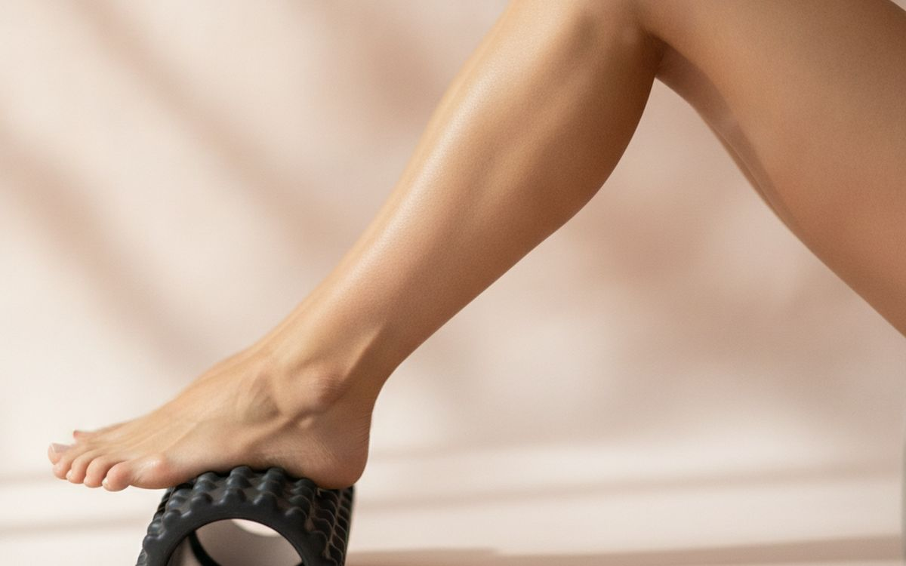
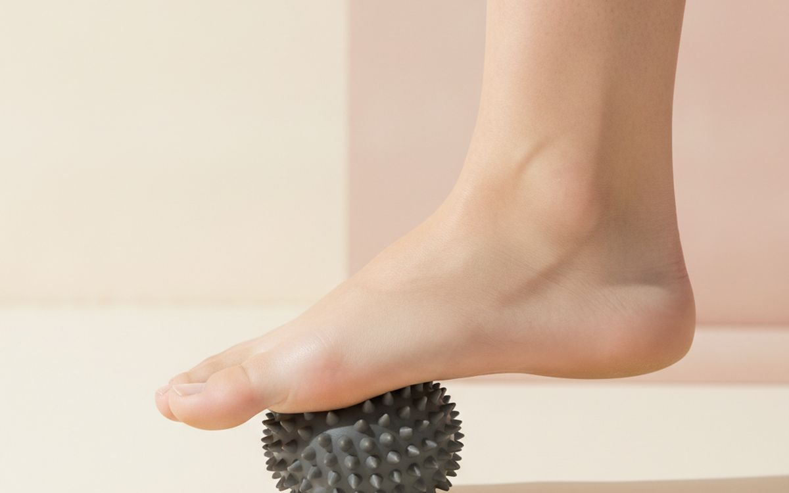
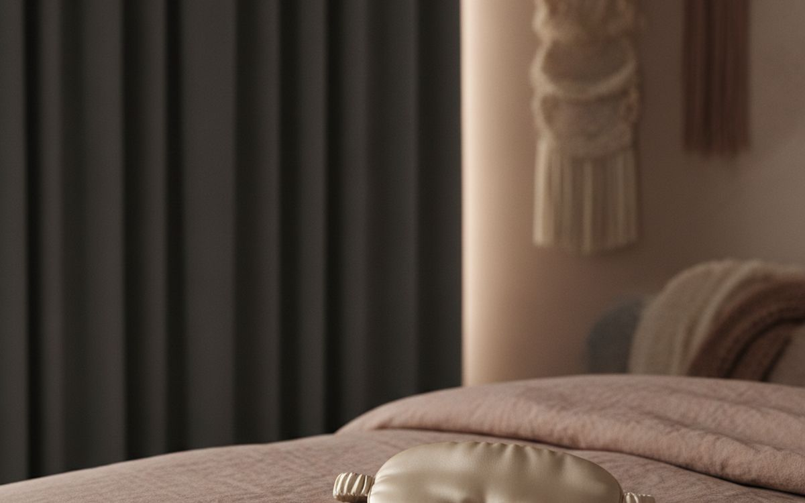
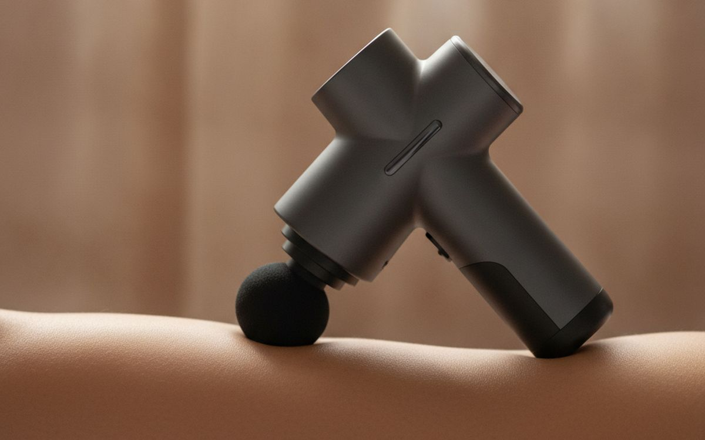
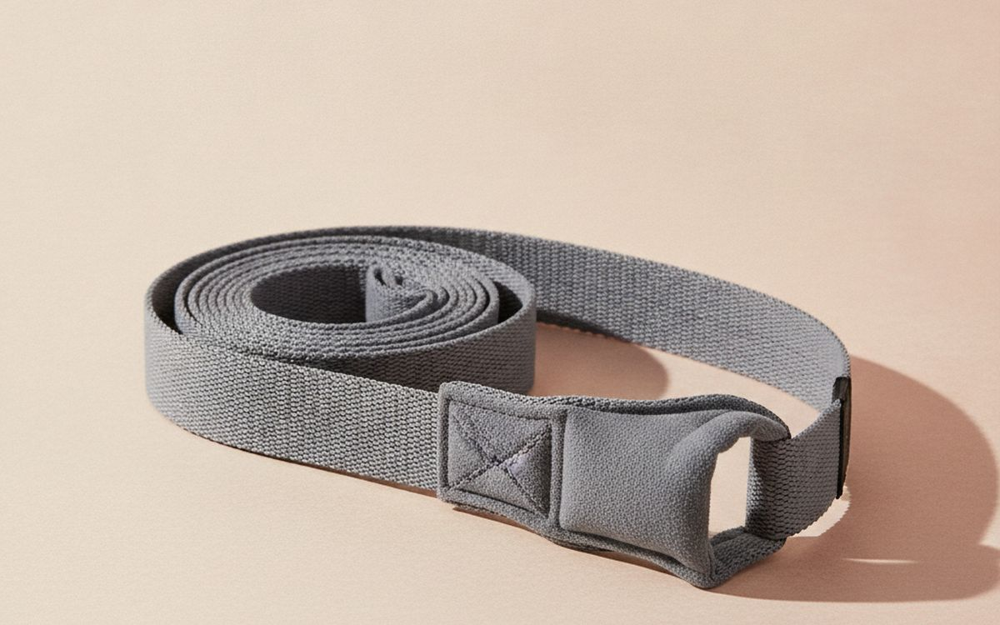
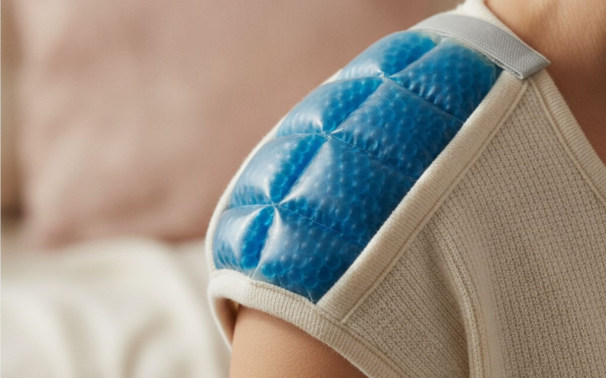
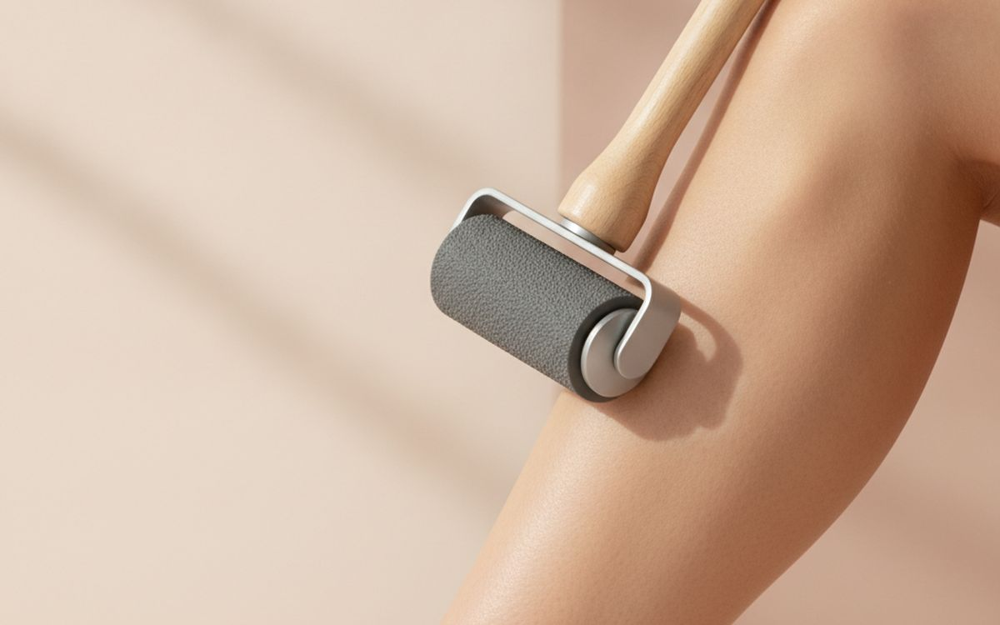
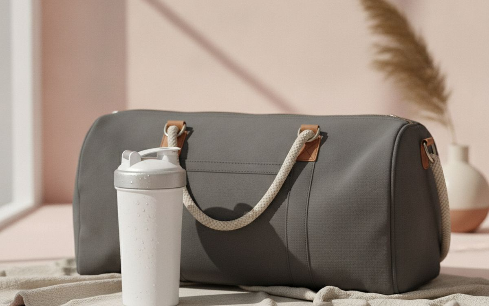
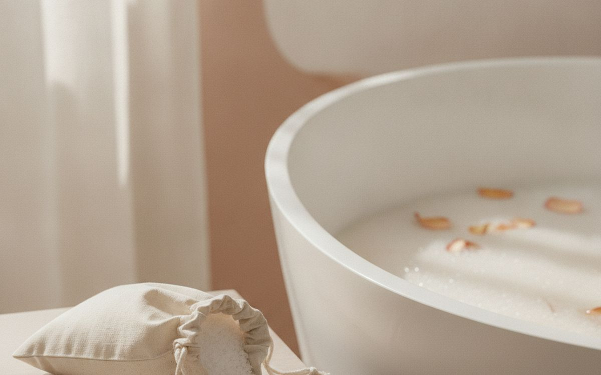
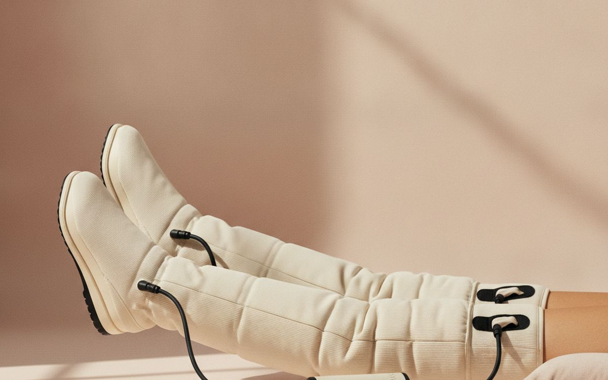

Recovery has become a big product category, with massage guns, compression boots and cold plunges marketed as essential. The evidence behind them is mixed. Most research agrees that sleep, protein, hydration and gentle movement do the heavy lifting. Self-massage tools can reduce the feeling of soreness and tightness for a while, which helps you keep training, but none of them speeds healing dramatically.
This list is ordered by value and evidence. Cheap tools with good support come first. Expensive gadgets sit lower, with a plain note about what they do.
Prices below are approximate street prices at the time of writing and move around constantly, especially during sale events. Treat them as a rough band for budgeting, not a quote. Always check the live listing before you buy.
The short version
A medium-density foam roller
The best value recovery tool
Disclosure. The links on this page are affiliate links. If you buy through one we may earn a commission at no extra cost to you. It does not affect what makes this list or the order it is in.
How we picked
These picks come from sports medicine research reviews, physiotherapists' advice and long-run owner reports, cross-checked against current retail listings. We have not personally tested every item here. Pain that is sharp, persistent or around joints needs a professional, not a gadget.
At a glance
Prices are approximate at the time of writing and change often.
The picks

01 · The best value recovery toolA medium-density foam roller
Foam rolling can reduce the feeling of soreness and improve short-term range of motion, according to research reviews, and it costs very little. A medium-density roller is firm enough to be useful without being painful. Roll slowly over calves, quads, glutes and upper back for a minute or two each. Avoid rolling directly over joints or the lower back. The case for it: reduces feelings of soreness, cheap, and lasts years. The trade-off is real: uncomfortable at first and very firm rollers can be too intense, so weigh that against how often it would actually get used.
$15-35Trade-off: Uncomfortable at first
Why it is here
- Reduces feelings of soreness
- Cheap
- Lasts years
Worth knowing
- Uncomfortable at first
- Very firm rollers can be too intense

02 · Feet, glutes and shouldersA massage ball or lacrosse ball set
Small balls reach spots a roller cannot: the soles of the feet, glutes, between the shoulder blades. Rolling a ball under the foot is a common, gentle option for tired feet. A set with a soft and firm ball, or a peanut-shaped double ball for the spine, covers most needs. The case for it: targets small areas, portable, and cheap. The trade-off is real: easy to press too hard and hard balls roll away, so weigh that against how often it would actually get used. For $10-20, it is a small, low-risk addition to the list rather than a centrepiece purchase you need to think hard about.
$10-20Trade-off: Easy to press too hard
Why it is here
- Targets small areas
- Portable
- Cheap
Worth knowing
- Easy to press too hard
- Hard balls roll away

03 · The real recovery toolA good sleep setup
Sleep is when most repair happens, and it is the most proven recovery tool there is. Blackout curtains or a sleep mask, a cool room and a consistent schedule help more than any gadget. Seven to nine hours is the usual target for adults. The case for it: most proven recovery factor, cheap or free, and helps everything else. The trade-off is real: requires habit changes and gadgets do not replace sleep, so weigh that against how often it would actually get used. Priced around $0-50, it is easy to justify even if it only ends up getting occasional rather than daily use.
$0-50Trade-off: Requires habit changes
Why it is here
- Most proven recovery factor
- Cheap or free
- Helps everything else
Worth knowing
- Requires habit changes
- Gadgets do not replace sleep

04 · Quick, targeted reliefA massage gun (mid-range)
Massage guns can reduce feelings of soreness and tightness for a short time, and many people find them pleasant. Mid-range models from brands like Theragun's Mini, Hypervolt Go or budget brands do the job; you do not need the most powerful. Keep away from bones, the neck and injuries. The case for it: quick, targeted relief, pleasant to use, and portable. The trade-off is real: evidence is modest and avoid bones, neck and injuries, so weigh that against how often it would actually get used. At $60-150, it earns its place on this list without asking for a big up-front commitment either way.
$60-150Trade-off: Evidence is modest
Why it is here
- Quick, targeted relief
- Pleasant to use
- Portable
Worth knowing
- Evidence is modest
- Avoid bones, neck and injuries

05 · Post-workout stretchingA stretching strap
A loop strap helps you hold stretches for hamstrings, quads and shoulders after workouts. Stretching helps many people feel less tight, although research is mixed on soreness. It is cheap and useful for flexibility. The case for it: easier stretching, cheap, and portable. The trade-off is real: easy to overstretch and mixed evidence on soreness, so weigh that against how often it would actually get used. For $8-15, it is a small, low-risk addition to the list rather than a centrepiece purchase you need to think hard about. It is a minor purchase in the context of the whole set-up, but the kind that is easy to regret skipping once you notice the gap.
$8-15Trade-off: Easy to overstretch
Why it is here
- Easier stretching
- Cheap
- Portable
Worth knowing
- Easy to overstretch
- Mixed evidence on soreness

06 · Aches and minor strainsA reusable hot and cold pack
Cold can ease pain and swelling right after a minor strain; heat helps stiff muscles and aches. A reusable gel pack does both. Wrap in a cloth to protect skin, and limit sessions to about 15-20 minutes. The case for it: eases pain, hot or cold, and cheap. The trade-off is real: can burn skin if used directly and not a substitute for medical care, so weigh that against how often it would actually get used. Priced around $10-20, it is easy to justify even if it only ends up getting occasional rather than daily use.
$10-20Trade-off: Can burn skin if used directly
Why it is here
- Eases pain
- Hot or cold
- Cheap
Worth knowing
- Can burn skin if used directly
- Not a substitute for medical care

07 · Calves and quadsA massage stick roller
A massage stick lets you control pressure on calves, quads and hamstrings with your hands. It is popular with runners and easy to take to races or the gym. The case for it: controlled pressure, portable, and cheap. The trade-off is real: hard to reach the back and cheap ones have rough rollers, so weigh that against how often it would actually get used. At $15-25, it earns its place on this list without asking for a big up-front commitment either way. As with anything on this list, check the exact listing details and current price before adding it to a cart.
$15-25Trade-off: Hard to reach the back
Why it is here
- Controlled pressure
- Portable
- Cheap
Worth knowing
- Hard to reach the back
- Cheap ones have rough rollers

08 · Muscle repairProtein powder or high-protein snacks
Muscles repair with protein. Most people can get enough from food, but a protein shake or high-protein snack after training is convenient. Choose products with third-party testing, such as NSF Certified for Sport or Informed Sport. The case for it: supports muscle repair, convenient, and widely available. The trade-off is real: unnecessary if your diet has enough protein and quality varies; look for third-party testing, so weigh that against how often it would actually get used. For $25-50, it is a small, low-risk addition to the list rather than a centrepiece purchase you need to think hard about.
$25-50Trade-off: Unnecessary if your diet has enough protein
Why it is here
- Supports muscle repair
- Convenient
- Widely available
Worth knowing
- Unnecessary if your diet has enough protein
- Quality varies; look for third-party testing

09 · Relaxing bathsEpsom salt
A warm bath helps many people relax, which may help sleep. Evidence that magnesium from Epsom salt is absorbed through the skin is weak, but a warm bath still feels good. Cheap and pleasant. The case for it: relaxing, may help sleep, and cheap. The trade-off is real: weak evidence for magnesium absorption and not suitable for some skin conditions, so weigh that against how often it would actually get used. Priced around $8-15, it is easy to justify even if it only ends up getting occasional rather than daily use. None of that makes it essential for everyone reading this, only worth knowing about if the description above matches how you actually use the space.
$8-15Trade-off: Weak evidence for magnesium absorption
Why it is here
- Relaxing
- May help sleep
- Cheap
Worth knowing
- Weak evidence for magnesium absorption
- Not suitable for some skin conditions

10 · Mostly skip for most peopleCompression boots
Pneumatic compression boots squeeze the legs in cycles. Athletes use them, and many people find them relaxing. For most recreational exercisers, the price is hard to justify given modest evidence. Spend the money on sleep, food and a foam roller first. The case for it: popular with athletes, relaxing, and heavily marketed, so worth knowing about. The trade-off is real: expensive for modest evidence and bulky, so weigh that against how often it would actually get used. At $300-800, it earns its place on this list without asking for a big up-front commitment either way.
$300-800Trade-off: Expensive for modest evidence
Why it is here
- Popular with athletes
- Relaxing
- Heavily marketed, so worth knowing about
Worth knowing
- Expensive for modest evidence
- Bulky
Common questions
Does foam rolling help recovery?
Research suggests it can reduce the feeling of soreness and improve short-term flexibility.
Are massage guns worth it?
They can feel good and ease tightness briefly. A foam roller gives similar benefits for less.
What is the best recovery tool?
Sleep. Then protein, hydration and light movement.
When should I see a professional?
For sharp, persistent or joint pain, or anything that affects how you move.
Today's deals
See what is discounted right now.
Deals →← All guides
As an AliExpress affiliate we earn from qualifying purchases. Prices and availability are accurate as of the date of publication and may change.